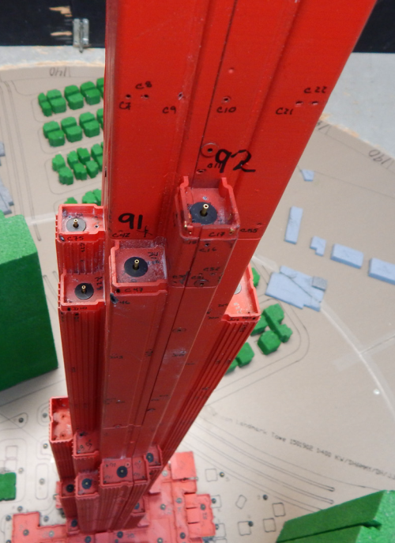
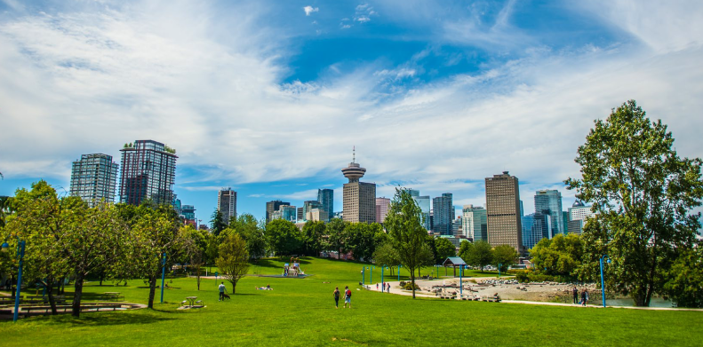

핵심 전문 분야
복잡한 건축물 과제를 위한 업계 최고의 솔루션
구조시스템에 미치는 바람의 영향 평가 및 내풍설계
풍동실험과 구조 엔지니어링을 통해 바람이 구조물의 거동에 미치는 영향을 분석하여 안전하면서 최적화된 내풍설계를 수행합니다. 이를 위해 구조 설계용 풍하중 산정, 풍진동 사용성 평가, 엘리베이터 등 설비운영 기준 수립 등을 수행합니다.
공기역학적 구조물 형상의 최적 설계
구조물의 형상에 대한 공기 역학적 설계를 통해 바람에 유리한 건축 디자인을 도출하도록 돕습니다. 또한, 실제 구현이 가능한 형상을 도출하기 위하여 구조적 효율성과 시공성을 함께 검토할 수 있습니다. 이를 통해 야심차고 혁신적인 디자인을 가능하게 합니다.

외장재에 대한 바람의 영향평가와 안전한 외피 설계
바람에 의해 구조물 외장재 작용하는 풍압을 평가하고, 파손위험을 식별하는데 도움을 줍니다. 외장재의 구성요소에 대한 바람의 영향을 함께 평가하여 안전한 외피설계가 가능하도록 합니다.

보행자 레벨 풍환경 평가를 통한 쾌적하고 안전한 개방공간 조성
고층건물 밀집지역, 도심시 공원, 쇼핑몰, 보행로 또는 기타 개방공간에 대하여 바람, 태양, 온습도를 조절하여 쾌적하고 안전한 공간을 조성하도록 도울 수 있습니다. 높은 테라스에 방풍막을 설치하고, 온도가 높은 구역에 바람길을 조성하는 등 풍환경 평가를 통해 다양한 대응방안을 제시하여 보다 쾌적하고, 안전하며 가치있는 개방공간을 조성할 수 있습니다.

적설, 빙설, 강우 영향 평가와 리스크 저감 설계
눈과 비가 바람과 건물 형상에 의해 예상치 못한 문제로 이어지지 않도록, 우리는 설계 단계에서 적설하중을 정밀하게 분석하여 안전성과 경제성을 모두 고려한 최적의 설계를 지원합니다. 또한 바람에 의해 눈이나 비가 특정 부위에 집중되거나 건물 내부로 유입되는 현상을 사전에 예측해, 누수와 유지관리 부담을 효과적으로 줄일 수 있도록 돕습니다. 아울러 눈과 얼음의 낙하 가능성을 체계적으로 평가함으로써 보행자와 시설에 대한 안전사고 예방에 기여합니다.

탄소저감 및 친환경 설계를 위한 지원기술 제공
태양빛과 바람, 공기의 흐름을 과학적으로 분석해 건물이 자연을 효율적으로 활용할 수 있도록 지원합니다. 태양광·일사 분석을 통해 에너지 생산을 높이고 냉·난방 부담을 줄여 탄소 배출 저감에 기여합니다.공기 오염과 배출 가스의 이동을 예측해 건강하고 쾌적한 실내외 환경을 조성하고 에너지 낭비를 방지합니다. 통합 분석을 통해 자연환기 활용, 에너지 손실 저감, 지속가능성 인증과 장기적인 운영 성능 향상을 함께 달성하는 방안을 제시할 수 있습니다.